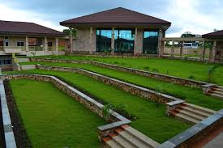
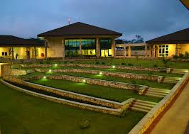
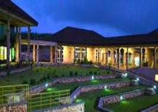
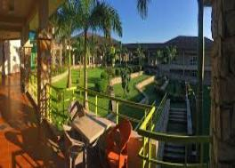
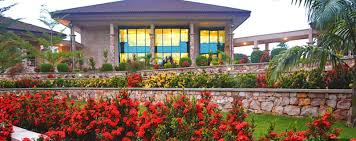

Welcome to Ashesi University College
Refresh

The Engineering Department

Engineers must have a strong foundation in the basic and advanced mathematics and sciences that the engineering discipline is built on. The following courses teach these skills and emphasize quantitative reasoning and the scientific method:
Calculus I
Calculus II
Statistic
Linear Algebra
Differential Equations
Mechanics
The Computer Science Department

Ashesi's Computer Science programme focuses not only on software design and programming, but also on empowering young people to be at the forefront of African growth by harnessing the power of technology. Students in the Computer Science programme are taken through robust foundational courses that prepare them to engage new technologies, and create software tools for African needs.
The Mathematics Department

In addition to practice applying procedures and deepening the understanding of specific mathematics concepts, homework assignments in Precalculus for example, are designed to build skills in critical reading, reinforce the value of independent practice, build confidence in mathematical problem solving, and develop flexibility in the use of technology.
The Social Science Department

Ashesi's core curriculum consists of an interdisciplinary liberal arts program that includes courses in the humanities and social sciences, as well as mathematics and preparatory business and computer science courses. A liberal arts education develops students' critical thinking skills, by teaching them to explore the connections between fields of knowledge, separate relevant information from the irrelevant, question assumptions, reflect on the views of other people, and explore and analyze alternative explanations to the many aspects of human existence.
The International Programmes Department
The Office of Diversity and International Programs (ODIP) coordinates and promotes all external collaborations and partnerships of the University as well as driving initiatives and programs aimed at advancing cross-cultural learning, awareness and acceptance of diversity and inclusion as a core tenant of the University.